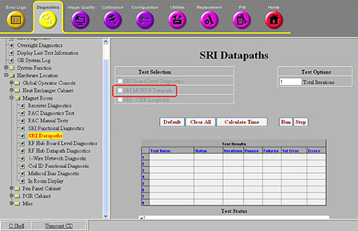

Operating Documentation
Direction 5500113, Rev# 3
Discovery MR750 3.0T Service Methods
Module Version 3.0, Version Date 8/19/08
Operating Documentation |
Diagnostics >> Hardware Location >> Magnet Room >> SRI Datapaths
Illustration 1: SRI MCPDB Datapath

The purpose of this diagnostic is to test the independent canfiber communication path between the SRI and the motor controller on the Motor Controller Power Distribution Board (MCPDB) that is in the PHPS.
This diagnostic forces a hard reset of the motor controller in the PHPS and verifies that communication is established after the reset. If communication fails between the SRI and the motor controller, the SRI forces the fiber-optic connection at the MCPDB into loopback. The SRI then checks that the fiber-optic signal can be asserted and de-asserted. This does not test the signal quality, just the connectivity. Distinct error messages will be logged for loopback failure or loopback success.
Fiber-optic connection between the SRI and the PHPS
SRI
PHPS
SRI
PHPS
Cables
A complete system is required. No special hardware or configurations are necessary.
This diagnostic is available from the Common Service Desktop when required system components are available.
For further information, refer to the System Block Diagrams.
Select the SRI MCPDB Datapath test.
Click [Run].
Ensure that the diagnostic passes by reviewing the status in the Test Results table.
Review the error log and corresponding extended error messages for subsequent actions. Additional responses to the diagnostic’s results are as follows:
Table 1: Problem / Solution Table
| Result | Description | GE Field Action |
| Failed | Communication fails but loopback passes. |
|
| ||||
| Prior to scanning, a TPS reset is required. | ||||